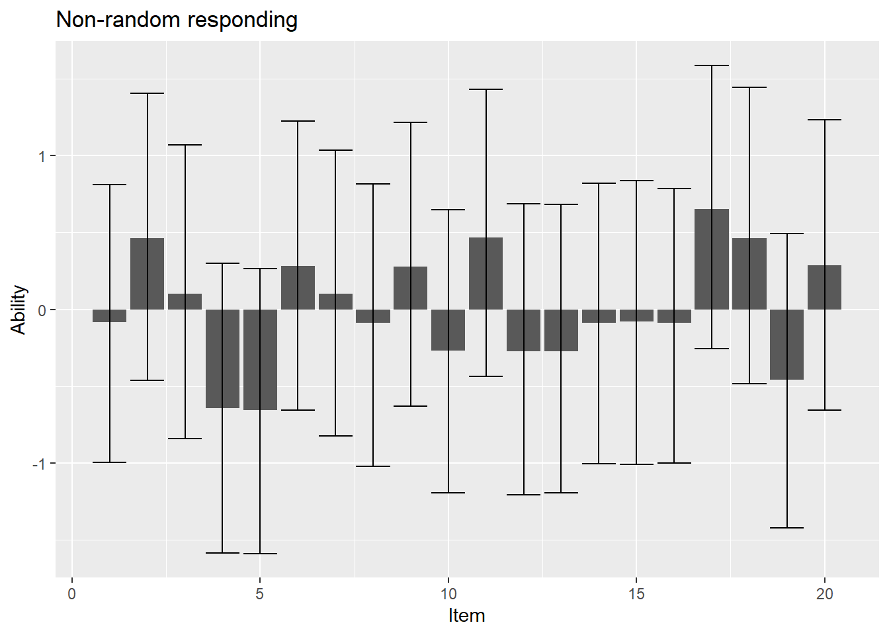
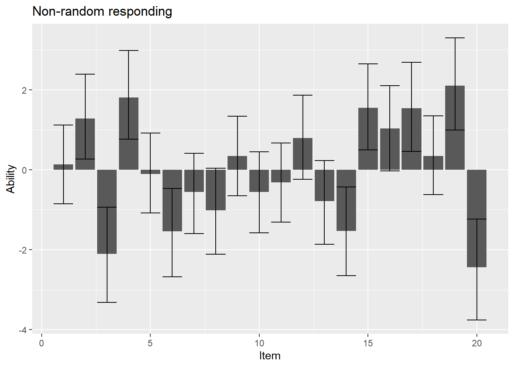

choose(20, 3) * 0.05^3 * 0.95^17[1] 0.06This is a collection of ideas for why we would want to use BTMs to assess preferences in a clinical (research) context, rather than Likert scales. For each ‘argument’, I introduce the reasoning, as well as the method one could use to test it (also, whether it can be done with existing data, or requires re-collection).
The reasoning is that, if the BTM is not reliable there’s no real point using it. The problem is that there may be different ways of estimating this.
We may want to consider two kinds of reliability - internal consistency and test-retest reliability. The problem is that we can’t use methods common for Likert scales: Rankings are ipsative data (i.e., the satisfy the constraint that the sum of all items == the overall mean) is already known.
For rankings, we can’t just use Cronbach’s alpha for two reasons (Van Leeuwen & Mandabach, 2002):
First, rankings are constrained to sum to a specific number (the sum of all ranks). As a result, there are no ‘between-subject’ effects. All subjects will have the same mean score. So, we are concerned with a very different question compared to ‘regular’ Cronbach alpha. Recall that this is asking to which extent variation in the items is due to variation in participants’ responses (sigma_o) versus total variation.
\[ \alpha = \dfrac{\sigma_o} {\sigma_o + \sigma_e} \]
Second, with rankings, error terms are bound to be negatively correlated - If I’ve assigned rank 1, no other item can have rank 1, so if item i has rank 1, this rank will be negatively correlated with the rank of any other candidates for rank 1 and so on (Rice, 1988). This leads to an under-estimation of standard errors for the comparison of any two items.
Van Leeuwen & Mandabach (2002) offer a way to get a ‘number’-estimate for internal consistency, but caution against its use due to additional assumptions (that I admittedly don’t quite grasp). They recommend showing that, across participants there are significant item effects, i.e., that across participants the rank of item i tends to be different from the average rank obtained if rankings were made at random.
Abilities are ipsative in the same way that ranks are. We may make the same argument, but showing that BTM abilities are significantly different from their (pre-determined) mean. To do this, we need to run a BTM which constrains the item mean to 0, rather than having a specific reference category.
To ‘put a number’ to it, we can exploit that we are using a Bayesian BTM, with credible intervals for all abilities. Credible intervals have a 95% percent chance of containing the (actually unkown) true mean for that ability. Assume that, in fact, the respondent responds at random (i.e., all abilities are truly 0). Thus, all credible interval should have a 95% chance of containing 0. We can construct a hypothesis test out of this (the irony of using a Bayesian BTM just to do a frequentist significance test is not lost on me):
H0: The number of credible intervals not containing 0 is not larger than would be expected given random responding
H1: The number of credible intervals not containing 0 is larger than would be expected given random responding.
We can test this with a simple binomial distribution, which we could then check against a pre-determined significance threshold:
\[ P(X = k) = \binom{n}{k} * 0.05^k * 0.95^{n-k} \]
E.g., among 20 items, the probability of obtaining at least 3 credible intervals that don’t contain 0 would be:
choose(20, 3) * 0.05^3 * 0.95^17[1] 0.06Note a problem with this! The binomial distribution assumes that individual events are independent. However, if we assume that credible intervals are comparable for different abilities (they should be) and abilities are ipsative, there will necessarily be some items that perform close to average. In our case, this means that this measure should be conservative (true non-random responding should generate MORE credible intervals containing 0 than if data were independent, so larger p-values than if data were independent).
To illustrate this idea, simulate some data where a respondent is choosing truly at random:
# try out a simple BT model
k = 20
dat <- list(
K = k, # number of items
N = 0, # number of contests
player0 = c(), # vector containing player0 for each game
player1 = c(), # vector containing player1 for each game
y = c(), # who won?
true_ability = rep(0, k), # all abilities are equally 0
true_probability = c() # true probability of winning on this trial
)
# run the contests
remaining_players <- 2:dat$K
for (i in 1:dat$K) {
for (j in remaining_players) {
if(i != j) {
dat$player0 <- append(dat$player0, i)
dat$player1 <- append(dat$player1, j)
dat$N = dat$N + 1
#probability that item 1 wins the contest
p <- inv_logit(dat$true_ability[i] - dat$true_ability[j])
dat$true_probability <- append(dat$true_probability, p)
dat$y = append(dat$y,
ifelse(runif(1, 0, 1) < p, 0, 1)) # if p < than threshold player 0 wins (0) otherwise player 1 (1)
}
}
# don't repeat items that already fought every other item.
remaining_players = remaining_players[remaining_players != i]
}Now, analyse with a Bayesian BTM:
fit <- stan(file = paste(getwd(), "/Course_BTM/individual.stan", sep = ""), data = dat)
# get the alpha values fitted with RSTAN
alpha <- rstan::extract(fit, pars = c("alpha")) %>% as.data.frame()
point_estimate <- alpha %>% colMeans()
credible_ints <- apply(alpha, 2, function(x) quantile(x, probs = c(0.025, 0.975), na.rm = TRUE))Plot results. Most of the error bars should include 0.

Now, compute the probability of observing this result if the responded acted at random:
# how many credible intervals do not contain 0
a <- credible_ints %>% t() %>% as.data.frame %>%
mutate(
no_zero = ifelse(
`2.5%` < 0 & `97.5%` > 0, 0, 1
)
)
q = sum(a$no_zero)
# recall we had k items
p <- choose(k, q) * 0.05^q * 0.95^(k-q)
#what's our probability?
print(p)[1] 0.36We would expect to get a p-value above our significance threshold (e.g., 0.05).
Now, repeat the same experiment, but with non-random responding:

[1] 1.9e-07Here, our p-value should be below our significance threshold. For this simulation, this is likely the case.
Test-retest reliabilities are typically estimated as the correlation between subject-level scores from timepoint 1 to timepoint 2. In principle, we could simply use a non-parametric correlation for this purpose. The situation is a bit more difficult since we’re not ranking individuals (what spearman’s rank coefficient is meant for)
Normally, we expect to have data with three columns for this subject-time1-time2. This is not the case for our data. We have a rank for every item i, meaning there are i correlations to be computed. We could compute one reliability per participant all independently. A plot of this would likely tell us a lot about individual differences in change preference stability (do some participants have stable preferences whereas others do not?), but it doesn’t answer the main question (how much variance in preference scores is true versus error?).
Alternatively, we could aggregate over participants, and compute a test-retest reliability using Spearman’s rho. This would disregard a lot of the data that we have available.
Finally, we could fit a two-level model:
\[ rank_2 = \beta_1 * rank_1 \]
where:
\[ \beta_1 = \alpha_1 + u_i \]
In this model, beta_1 represents reliability, as the correlation between ranks at time_1 and time_2. However, to incorporate the idea that some items may be more stable than others, we include a random slope u_i for each item in the data-set. Since it is not meaningful in this context, drop the intercept. Set the mean of all ranks to zero by subtracting (i + 2) / 2 from the ranks. Remove fixed and random intercept from the model accordingly.
One may debate whether we should include the item-level effect as random effect or fixed effect, but the problem with a fixed effect is that, for high levels of item-variability, the model may start predicting rank more from the identity of the item than its actual rank (which is not quite what we want it to do).
n_subj = 1000
n_item = 5
true_var = 10
noise_var = 0.05
item_noise_var = 5Here the true correlation between time 1 and time 2 (= true reliability) should be:
\[ \rho = \dfrac{cov(t_1, t_2)} {\sqrt{(var(t_1) * var(t_2)}} \] where:
\[ var(t_2) = var(t_1 + item + noise) \]
\[ var(t_2) = var(t_1) + var(item) + var(noise) + cov(t_1, item) + cov(t_1, noise) + cov(noise, item) \]
Since we assume that random effects and error are uncorrelated with true score and each other:
\[ var(t_2) = var(t_1) + var(item) + var(noise) \]
And:
\[ cov(t_1, t_2) = cov(t_1, t_1 + item + noise) = var(t_1) + cov(t_1, item) + cov(t_1, noise) \]
Which again simplifies, since true scores and random effects/errors are uncorrelated:
\[ cov(t_1, t_2) = var(t_1) \]
In total, this yields:
\[ \rho = \dfrac{var(t_1)} {\sqrt{var(t_1) * (var(t_1) + var(item) + var(noise))}} \]
true_cor = true_var / sqrt(true_var * (true_var + noise_var + item_noise_var))
true_cor[1] 0.82Now set up the simulation:
# create a few random rankings:
dat <- list(
item = c(),
subj = c(),
true = c(),
noise = c(),
rank1 = c(),
rank2 = c()
)
item_noise <- rnorm(n = n_item, mean = 0, sd = item_noise_var) # item-level random effect
for (i in 1:n_subj) {
true <- rnorm(n = n_item, mean = 0, sd = true_var) # true score at both timepoints
noise <- rnorm(n = n_item, mean = 0, sd = noise_var) # random noise
rank1 <- rank(true) - (n_item + 1) / 2 # corresponding rank
rank2 <- rank(true + item_noise + noise) - (n_item + 1) / 2 # rank at time 2
dat$item <- append(dat$item, as.factor(1:n_item))
dat$subj <- append(dat$subj, rep(i, n_item))
dat$true <- append(dat$true, true)
dat$noise <- append(dat$noise, noise)
dat$rank1 <- append(dat$rank1, rank1)
dat$rank2 <- append(dat$rank2, rank2)
}
model <- lmer(rank2 ~ 0 + rank1 + (0 + rank1 |item), data = dat)
res <- summary(model)
summary(res)Linear mixed model fit by REML ['lmerMod']
Formula: rank2 ~ 0 + rank1 + (0 + rank1 | item)
Data: dat
REML criterion at convergence: 14038
Scaled residuals:
Min 1Q Median 3Q Max
-3.117 -0.629 0.000 0.745 3.324
Random effects:
Groups Name Variance Std.Dev.
item rank1 0.0156 0.125
Residual 0.9662 0.983
Number of obs: 5000, groups: item, 5
Fixed effects:
Estimate Std. Error t value
rank1 0.7115 0.0567 12.5Now, compare with model without random effects:
# compare with model without random effects
model2 <- lm(rank2 ~ 0 + rank1, data = dat)
model2
Call:
lm(formula = rank2 ~ 0 + rank1, data = dat)
Coefficients:
rank1
0.71 anova(model, model2)Data: dat
Models:
model2: rank2 ~ 0 + rank1
model: rank2 ~ 0 + rank1 + (0 + rank1 | item)
npar AIC BIC logLik deviance Chisq Df Pr(>Chisq)
model2 2 14149 14162 -7073 14145
model 3 14040 14059 -7017 14034 112 1 <2e-16 ***
---
Signif. codes: 0 '***' 0.001 '**' 0.01 '*' 0.05 '.' 0.1 ' ' 1If significant, this will tell us if there is true variation in reliability between the items.
To see whether our model is making reasonable predictions, also get the individual item-level reliabilities:
item_cors <- list(
item = 1:n_item,
cor = c()
)
for (i in 1:n_item){
temp <- dat %>% as.data.frame() %>%
filter(item == i)
c <- cor.test(temp$rank1, temp$rank2, method = "spearman")$estimate[1]
item_cors$cor <- append(item_cors$cor, c)
}
print(item_cors)$item
[1] 1 2 3 4 5
$cor
rho rho rho rho rho
0.88 0.75 0.86 0.81 0.88 Our lme model estimates that the variance in the 2-level data is very, very small - sometimes we run into singularities (i.e., variance in reliability at item level is predicted to be exactly 0). So, it’s important to double check with our ‘raw’ computed values: Their variance is:
item_cors$cor %>% var()[1] 0.0031Now, compare with a standard spearman rho, computed ignoring the hierarchical structure of the data.
c <- cor.test(dat$rank1, dat$rank2, method = "spearman")
c
Spearman's rank correlation rho
data: dat$rank1 and dat$rank2
S = 6e+09, p-value <2e-16
alternative hypothesis: true rho is not equal to 0
sample estimates:
rho
0.71 To summarise:
We can estimate overall (raw) test-retest reliability, ignoring item-structure with spearman’s rho
We can supplement this by calculating separate reliabilities for each item.
We can supplement this by computing a 2-level lme including random slopes for items. However, this seems to run into singularities a lot and may not be trustworthy.
The same problems should arise for abilities computed at the subject level, so they can be solved in the same way (using a total reliability and individual item reliabilities). Unlike ranks, abilities are a continuous measure, and our BTM can be set to compute abilities under the assumption of normally distributed errors - so we could try a parametric analysis instead of spearman’s rho?